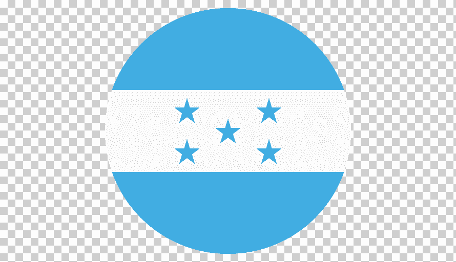
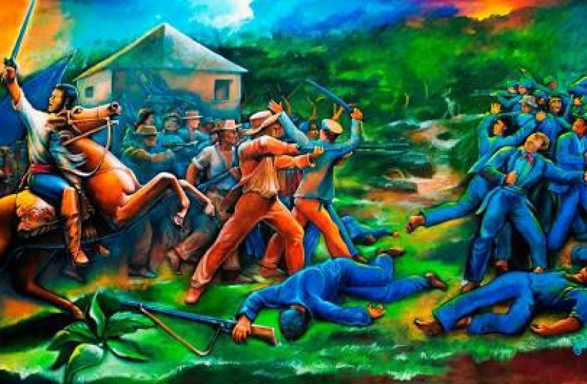
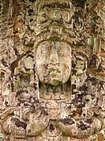
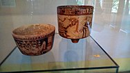
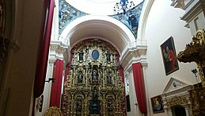
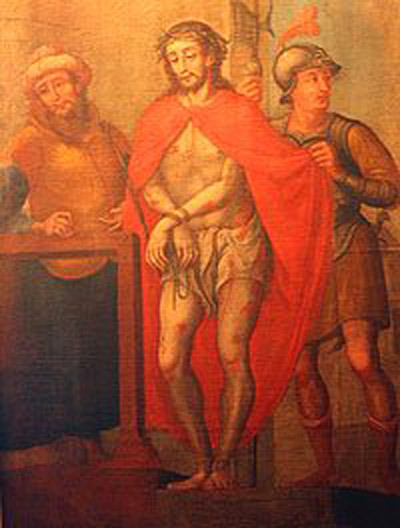
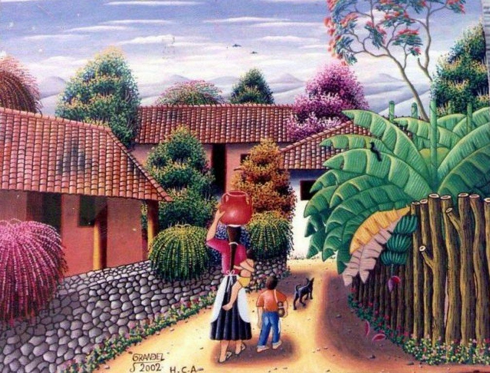
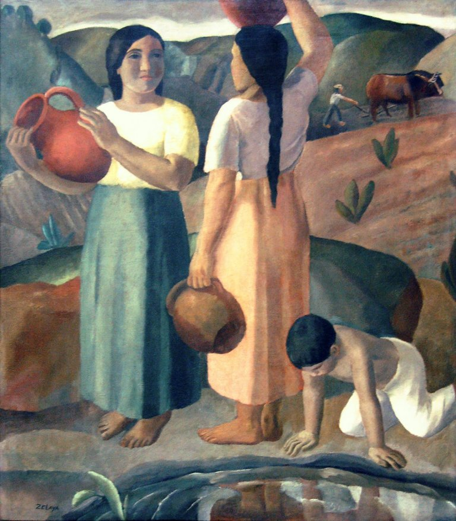

|  |
INICIO |
HISTORIA |
ARTES VISUALES |
LITERATURA |
MUSEOS |
CONTACTO |
ARTE Y CULTURA EN HONDURAS |
Historia del Arte en Honduras |
Como arte denominamos un conjunto de disciplinas o producciones del ser humano de fines estéticos y simbólicos a partir de un conjunto determinado de criterios, reglas y técnicas. Las artes buscan representar, a través de medios diferentes el universo de inquietudes humanas, sean reales o imaginadas, mediante el uso de símbolos o alegorías.
El arte ha sido una faceta que ha existido con la presencia misma del ser humano en nuestro territorio, lo cual podemos ubicar con la llegada de migraciones de grupos humanos ,cazadores y recolectores que llegaron al istmo a finales de la última era del hielo, evidencia de la presencia del ser humano tenemos en la región de La Esperanza en el departamento de Intibucá, La Cueva del Gigante en La Paz, las Pisadas del Diablo en Talanga en el departamento de Francisco Morazán.
Con la llegada del Colonizador, como parte del triángulo del comercio, se introdujo esclavos desde el África y con la llegada en el año de 1797 de los Garífunas se completa el triángulo del Mestizaje Bio Socio Cultural de la época colonial que caracterizan las raíces de nuestra población (Indígena, Afroamericanos y Europeos).
La historia del arte centroamericano y de la actual república de Honduras, cuenta como división tradicional las siguientes épocas; pre hispánica, la colonial, independencia (épocas contemporánea y reciente), con representantes en todas las formas de expresión de las artes conocidas.
También se registran expresiones artísticas precolombinas y actualmente las etnias vivas como los Tolupanes, Chortíes, Lencas, Tawahkas, entre otros, desarrollaron diversas formas de expresión artística.
Durante la colonización española florecieron nuevas artes y técnicas en el país y se impone el estilo Barroco y Rococó muchas de estas obras se encuentran preservadas en la Galería Nacional de Arte. |
 |
Arte Prehispánico |
_____________________________________________________________________________________________________________________________________________ |
Durante tres milenios antes de los territorios de la actual Honduras florecieron muchas culturas, a grandes rasgos herederas de la influencia de la región cultural Mesoamericana y de la Región Cultural Circuncaribe.La primera región cultural fundamento sus expresiones culturales en el cultivo del maíz mientras la segunda región cultural precolombina fundamento sus expresiones culturales en la recolección de frutos, la caza y la pesca, entre ellas la civilización maya, expresiones de esta civilización lo encontramos en los vestigios o evidencias de los Centros Ceremoniales que han llegado hasta nuestros días como es el caso de Copán, el Puente, Los Naranjos entre otros grupos precolombinos y hoy etnias vivas son los Tolupanes, Chortíes, Lencas, Tawahkas, entre otros, estas culturas desarrollaron diversas formas de expresión artística, las cuales aún siguen descubriéndose y planteándose los paradigmas existentes sobre ellas a partir de los recientes descubrimientos dados en las Cuevas de Talgua o en la mítica Ciudad Blanca.
Dichos pueblos desarrollaron de maneras muy diversas y variadas las artes, entre ellas la arquitectura, las pinturas rupestres, la cerámica, escultura, música entre otras, además de diversas ciencias como biología, botánica, química, medicina, matemáticas y astronomía. Varias de estas obras se pueden observar en los diferentes museos que existen en el país, resaltan la Galería Nacional de Arte o en el Museo de la Identidad Nacional.
| Estela Maya en Copan |
Vasijas de la cultura |
Arte Colonial |
___________________________________________________________________________________________________________________________________________________ |
El contacto dado con la llegada del colonizador europeo implicó una serie de transformaciones radicales en la vida de los pobladores nativos del continente y de la region que conforma la actual Honduras, pues la llegada del conquistador dio un vuelco vertiginoso ante la imposición de los patrones socio culturales del español y de la cultura cristiano occidental que se impuso durante los siglos venideros.
Junto con el etnocidio cultural físico de las poblaciones nativas en especial la Lenca, Tolupan, y Maya, se dio a la par un proceso de mestizaje que ha marcado el perfil del poblador de Honduras, que aún hoy día nos sigue afectando en todos los ámbitos de la identidad cultural. Durante la colonización española florecieron nuevas artes y técnicas en el país, traídas por el europeo colonizador e impuestas en las formas y estilos de cosmogonía indígena que sufre la imposición colonial y la rediseña en el mestizaje resultante, así en este contexto del proceso de acumulación originario de capital se climatizan el estilo Barroco y Rococó muchas de estas obras se encuentran preservadas en la Galería Nacional de Arte, Colegio Tridentino de Comayagua, El museo de Arte de la Catedral de Tegucigalpa, y el Museo de la identidad nacional. La mayoría de las obras artísticas del periodo colonial son de carácter religioso o arte sacro. Entre sus mejores exponentes están los retablos de las iglesias coloniales y las pinturas religiosas realizadas en suelo hondureño entre los siglos XVI y XVIII tanto por artistas indígenas como españoles. Aunque también cabe remarcar que muchas de estas obras también fueron traídas desde la metrópoli, España, como los retablos hechos por Francisco de Ocampo en Comayagua. |
Retablo barroco de la catedral de San Miguel Arcángel de Tegucigalpa |
Nombre: Ecce Homo (El Nazareno)
Autor: José Miguel Gómez |
Arte en el período de la Independencia y actualidad |
__________________________________________________________________________________________________ |
|
Después de proclamarse la independencia de Centro América, en 1821, la plástica hondureña desplazo progresivamente su interés del tema religioso a la naturaleza, los retratos de la nueva clase dirigente y los bodegones, dicha tendencia novedosa fue protagonizada en general por artistas foráneos.
A partir de las dos primeras décadas del siglo XIX destaca la figura de Toribio Torres, quien además de pintar algunas obras de temas bíblicos, realiza los retratos de varios obispos de Comayagua, es autor de un cuadro de gran factura titulado Las tres Divinas Personas, hoy día en manos de particulares.
De acuerdo a investigaciones, en la primera década del siglo XX hay una especie de vacío con respecto a la pintura hondureña, en esa época no es encuentran nombres representativos, aunque se realizaron algunas obras de cierto valor artístico, recién en la década del 1910 comienza a perfilarse un grupo de pintores de singular importancia entres los que se encuentra, Pablo Zelaya Sierra, Confucio Montes de Oca.
Entre los precursores de esos gigantes de la plástica se encuentra Miguel Ángel Ruiz Matute, Virgilio Guardiola, Dino Fanconi, Celsa Flores, Roque Zelaya, Benigno Gómez, Armando Lara.
Pablo Zelaya Sierra, uno de los fundadores de la pintura moderna centroamericana, egresado de la Real Academia de San Fernando de Madrid. Su obra más recordada es “Hermanos contra Hermanos”, finalizada unos días antes de que muriera en el año 1932.
La cosecha de los 90’s nos trae e Adonay Navarro, Darío Rivera, Iván Fiallos, Jacob Gradiz, Miguel Romero, Melvin Alvarado y Marco Cueva son considerados los más sólidos de esa generación. |
Nombre: Campesina
Autor: Pedro Grandez |
Nombre: Campesinas
Autor: Pablo Zelaya Sierra |
______________________________________________________________________________________________________________________________________________________________________
 bellasarteshn
bellasarteshn Escuela Nacional de Bellas Artes
Escuela Nacional de Bellas Artes